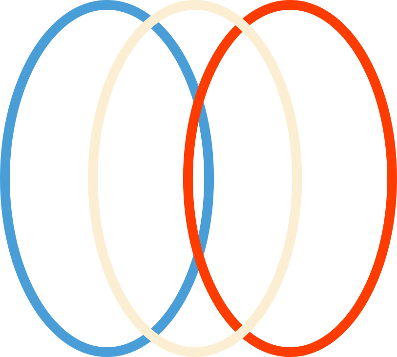
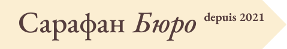

Пенсия
во Франции:
с чего начать?
Разбираемся, где увидеть свои пенсионные права, как оценить будущий доход и какие вопросы задать перед выбором накоплений.


Разбираемся, где увидеть свои пенсионные права, как оценить будущий доход и какие вопросы задать перед выбором накоплений.